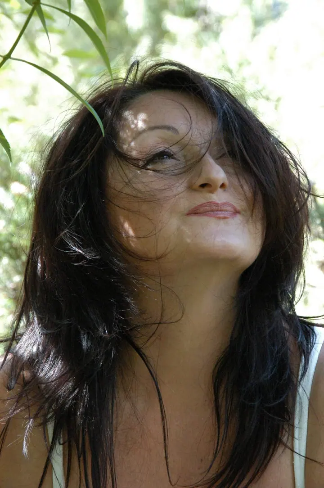
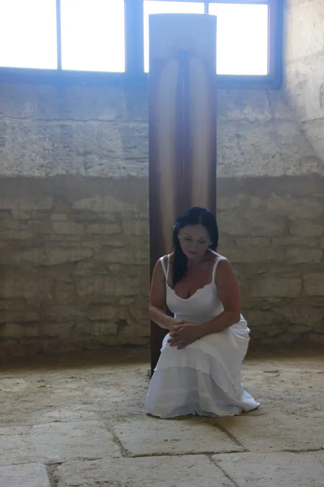
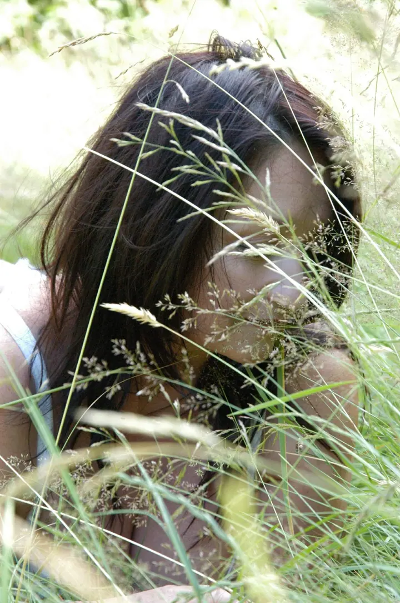

Alena Dědicová, česká výtvarnice
Jmenuji se Alena Dědicová a jsem česká výtvarnice. Po roce 1989 jsem začala vystavovat po celé republice a moje práce dnes najdete v soukromých sbírkách doma i v zahraničí.
Rezervovat termínMezi trávou, kamenem a tichem
Jmenuji se Alena Dědicová a jsem česká výtvarnice. Od roku 1989 vystavuji po celé České republice a moje díla jsou zastoupena v soukromých sbírkách doma i v zahraničí.


Ahoj, jsem Alena a ráda vás vyfotím
V letech 1996 až 2003 jsem se věnovala také galerijní činnosti. Mezi lety 2000 a 2002 jsem se podílela na projektu Deset století architektury se SPH.
Pokud vás moje tvorba zaujala, ať už kvůli výstavě, spolupráci nebo konkrétnímu dílu, napište mi na atelier.g@seznam.cz nebo zavolejte na 606 437 428.
- Jsem česká výtvarnice
- Vystavuji po celé republice
- Díla mám v soukromých sbírkách
- Věnovala jsem se galerijní činnosti
- Podílela jsem se na Deseti stoletích architektury
Co fotím
Vzpomínky, které zůstanou
Výtvarná tvorba
Jsem česká výtvarnice. Svá díla vystavuji po celé republice a najdete je v soukromých sbírkách doma i v zahraničí.
Postup
Jak to probíhá
- 1
Ozvěte se
Napište mi e-mail nebo zavolejte a krátce popište, co vás k mé tvorbě přivádí.
- 2
Probereme záměr
Společně ujasníme, jestli jde o výstavu, spolupráci, nebo zájem o konkrétní dílo.
- 3
Setkání nad díly
Domluvíme se na osobním setkání, kde si práce můžete prohlédnout v klidu.
- 4
Další kroky
Dohodneme podrobnosti, které odpovídají vašemu záměru.
Otázky
Na co se ptáte
Kde mohu vidět vaše práce?
Vystavuji po celé České republice. Pro informace o aktuálních výstavách mi napište nebo zavolejte.
Je možné získat vaše dílo?
Moje práce jsou zastoupeny v soukromých sbírkách doma i v zahraničí. Pokud vás některé dílo zaujalo, ozvěte se mi a domluvíme se.
Máte zkušenosti se spoluprací na projektech?
Ano. V letech 1996 až 2003 jsem se věnovala galerijní činnosti a v letech 2000 až 2002 jsem se podílela na projektu Deset století architektury se SPH.
Jak se s vámi nejlépe spojit?
Napište mi na atelier.g@seznam.cz nebo zavolejte na 606 437 428.